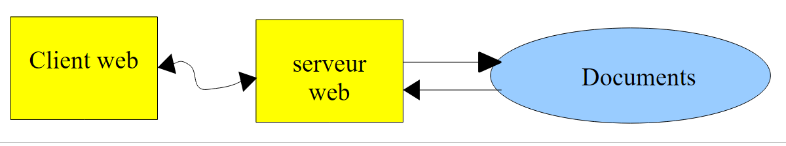
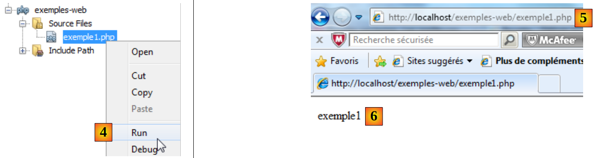
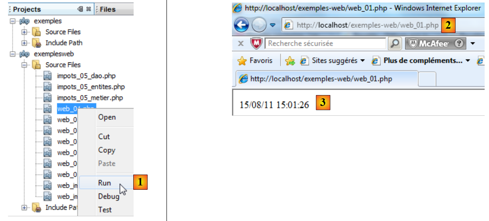
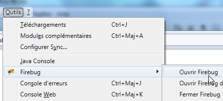
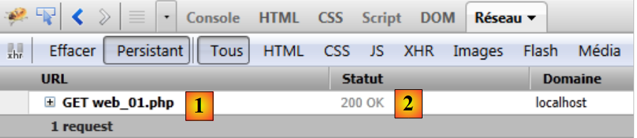
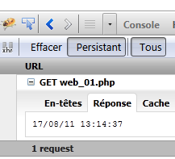
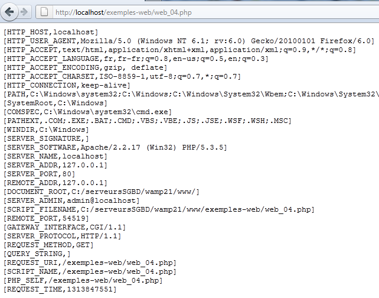
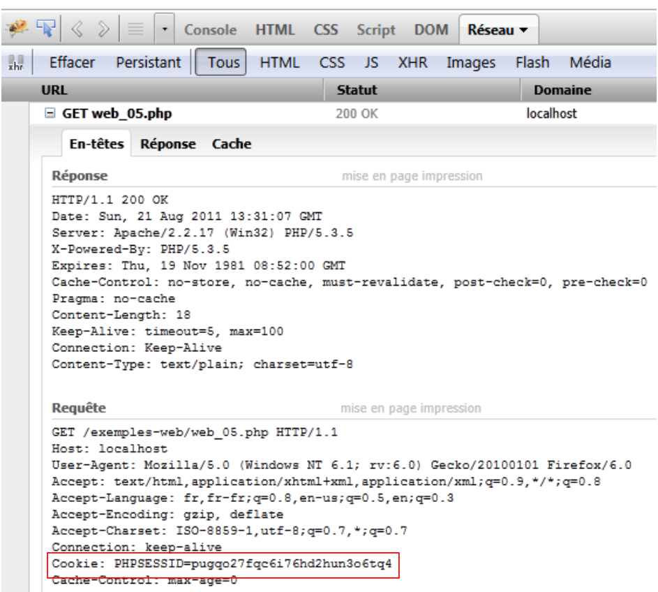

10. Des serveurs en PHP
Les programmes PHP pouvant être exécutés par un serveur WEB, un tel programme devient un programme serveur pouvant servir plusieurs clients. Du point de vue du client, appeler un service WEB revient à demander l'URL de ce service. Le client peut être écrit avec n'importe quel langage, notamment en PHP. Dans ce dernier cas, on utilise alors les fonctions réseau que nous venons de voir. Il nous faut par ailleurs savoir "converser" avec un service WEB, c'est à dire comprendre le protocole http de communication entre un serveur Web et ses clients. C'est le but des programmes qui suivent.
Le client web décrit au paragraphe 9.2 nous a permis de découvrir une partie du protocole HTTP.

Dans leur version la plus simple, les échanges client / serveur sont les suivants :
- le client ouvre une connexion avec le port 80 du serveur web
- il fait une requête concernant un document
- le serveur web envoie le document demandé et ferme la connexion
- le client ferme à son tour la connexion
Le client peut être de nature diverse : un texte au format HTML, une image, une vidéo, ... Ce peut être un document existant (document statique) ou bien un document généré à la volée par un script (document dynamique). Dans ce dernier cas, on parle de programmation web. Le script de génération dynamique de documents peut être écrit dans divers langages : PHP, Python, Perl, Java, Ruby, C#, VB.net, ...
Nous utilisons ici PHP pour générer dynamiquement des documents texte.
 |
- en [1], le client ouvre une connexion avec le serveur, demande un script PHP, envoie ou non des paramètres à destination de ce script
- en [2], le serveur web fait exécuter le script PHP par l'interpréteur PHP. Ce script génère un document qui est envoyé au client [3]
- le serveur clôt la connexion. Le client en fait autant.
Le serveur web peut traiter plusieurs clients à la fois. Avec le paquetage logiciel WampServer, le serveur web est un serveur Apache, un serveur open source de l'Apache Foundation (http://www.apache.org/). Dans les applications qui suivent, WampServer doit être lancé. Cela active trois logiciels : le serveur web Apache, le SGBD MySQL, l'interpréteur PHP.
Les scripts exécutés par le serveur web seront écrits avec l'outil Netbeans. Nous avons écrit jusqu'à maintenant des scripts PHP exécutés dans un contexte console :
 |
L'utilisateur utilise la console pour demander l'exécution d'un script PHP et en recevoir les résultats.
Dans les applications client /serveur qui vont suivre,
- le script du client est exécuté dans un contexte console
- le script du serveur est exécuté dans un contexte web
 |
Le script PHP du serveur ne peut pas être n'importe où dans le système de fichiers. En effet, le serveur web cherche dans des endroits précisés par configuration, les documents statiques et dynamiques qu'on lui demande. La configuration par défaut de WampServer fait que les documents sont cherchés dans le dossier <WampServer>/www où <WampServer> est le dossier d'installation de WampServer. Ainsi un client web demande un document D avec l'URL [http://localhost/D], le serveur web lui servira le document D de chemin [<WampServer>/www/D].
Dans les exemples qui suivent, nous mettrons les scripts serveur dans le dossier [www/exemples-web]. Si un script serveur s'appelle S.php, il sera demandé au serveur web avec l'URL [http://localhost/exemples-web/S.php]. Le document [<WampServer>/www/exemples-web/S.php] lui sera alors servi.
 |
Pour créer un script serveur avec Netbeans, nous procéderons de la façon suivante :
 |
- en [1], nous créons un nouveau projet
- en [2], nous prenons la catégorie [PHP] et le projet [PHP Application]
 |
- en [3], nous donnons un nom au projet
- en [4], nous choisissons un dossier pour le projet
- en [5], nous indiquons que le script doit être exécuté par un serveur web local (l'URL du script sera de la forme http://localhost/...). Le serveur web local sera le serveur web Apache de WampServer.
- en [6], nous donnons l'URL du projet. Ici, nous décidons qu'un script S.php du projet sera demandé avec l'URL [http://localhost/exemples-web/S.php]. D'après ce qui a été dit, cela veut dire que le chemin du script S.php dans le système de fichiers sera [<WampServer>/www/exemples-web/S.php]. C'est ce qui est indiqué en [7]. Nous demandons ici que tout script S.php du projet soit recopié dans l'arborescence du serveur web Apache.
- en [8], le nouverau projet.
Ecrivons un script de test :
 |
- en [1], nous créons dans le projet [exemples-web] un premier script PHP
- en [2], nous lui donnons un nom
- en [3], après l'avoir créé, nous lui donnons le contenu suivant
Pour la suite, il faut que WampServer soit lancé.
 |
- en [4], nous exécutons le script web [exemple1.php]. Netbeans va alors lancer le navigateur par défaut de la machine et va lui demander d'afficher l'URL [http://localhost/exemples-web/exemple1.php] [5]
- en [6], le navigateur affiche ce que le script serveur a écrit au client.
Par la suite, nous rencontrerons deux types de clients web :
- un navigateur comme ci-dessus. Nous avons écrit que le serveur web envoyait une réponse de la forme : entêtes HTTP, ligne vide, texte. Le navigateur n'affiche que texte.
- un script PHP qui lui affichera la totalité de la réponse entêtes HTTP, ligne vide, texte.
Dans la suite,
- les scripts serveur seront écrits comme [exemple1.php] ci-dessus
- les scripts client seront écrits comme les scripts console que nous avons écrits jusqu'à maintenant.
10.1. Application client/ serveur de date/heure
10.1.1. Le serveur (web_01)
<?php
// time : nb de millisecondes depuis 01/01/1970
// format affichage date-heure
// d: jour sur 2 chiffres
// m: mois sur 2 chiffres
// y : année sur 2 chiffres
// H : heure 0,23
// i : minutes
// s: secondes
print date("d/m/y H:i:s",time());
Basiquement, le script PHP ci-dessus écrit l'heure courante sur l'écran. Cependant, lorsqu'il est exécuté par un serveur web, le flux n° 1 qui est habituellement associé à l'écran est redirigé vers la connexion qui lie le serveur à son client. Donc, dans un contexte web, le script ci-dessus envoie l'heure courante sous forme de texte au client.
Exécutons ce script au sein de Netbeans :
 |
- en [1], on exécute le script. Un navigateur web est alors lancé.
- en [2], l'URL demandée par le navigateur web
- en [3], le texte envoyé par le script serveur
Le navigateur client utilise le protocole HTTP pour dialoguer avec le serveur web. Nous avons déjà décrit la forme de ce protocole.
Le client envoie des lignes de texte qu'on peut décomposer en trois parties : entêtes HTTP, ligne vide, document. Le document envoyé au serveur web est le plus souvent vide ou bien c'est un ensemble de paramètres parami=vali où vali est une valeur saisie par l'utilisateur dans un formulaire Html.
La réponse du serveur a la même forme : entêtes HTTP, ligne vide, document où document est cette fois le document demandé par le navigateur client. Si le client a transmis des paramètres, le document délivré dépend en général de ces paramètres.
Avec le navigateur Firefox, il est possible de découvrir les échanges réels entre client et serveur web. Il existe un plugin pour Firefox, appelé Firebug qui permet de tracer ces échanges. Firebug est disponible à l'URL [https://addons.mozilla.org/fr/firefox/addon/firebug/]. Si on utilise le navigateur Firefox pour visiter cette Url, on peut alors télécharger le plugin Firebug. Nous supposons dans la suite que le plugin Firebug a été téléchargé et installé. Il est disponible via une option du menu de Firefox :
 |
Une fenêtre Firebug s'ouvre dans la fenêtre du navigateur Firefox. Cette fenêtre présente elle-même un menu :
 |
Pour découvrir les échanges client / serveur lors d'une requête HTTP, nous demandons l'URL [http://localhost/exemples-web/web_01.php] avec le navigateur Firefox. La fenêtre de Firebug se remplit alors d'informations :
 |
Ci-dessus, on a un résumé des échanges client / serveur :
- [1] : le client a envoyé la commande HTTP : GET /exemples-web/web_01.php HTTP/1.1 pour demander le document [web01.php]
- [2] : le serveur a envoyé la réponse : HTTP/1.1 200 OK indiquant qu'il a trouvé le document demandé.
Firebug permet d'obtenir les échanges complets. Il suffit de "déplier" l'URL :
 |
Nous voyons ci-dessus les en-têtes Http échangés entre le client (Requête) et le serveur (Réponse). Il est possible d'avoir le code source des échanges, c.a.d. les lignes de texte réellement échangées [1]. Nous obtenons alors le code source suivant :
 |
Pour écrire un script client du serveur web, il nous suffit de reproduire le comportement du navigateur. Après avoir ouvert une connexion avec le serveur, le script client pourrait envoyer les 8 lignes de la requête ci-dessus. En fait tout n'est pas indispensable et nous n'enverrons que les trois lignes suivantes :
- ligne 1 : précise le document demandé et le protocole HTTP utilisé
- ligne 2 : donne le nom de la machine du script client
- ligne 3 : indique qu'après l'échange, le client fermera la connexion au serveur
Intéressons-nous maintenant à la réponse du serveur. Nous savons qu'elle a été produite par le script PHP [web_01.php]. Ci-dessus, nous voyons les entêtes HTTP de la réponse. Le code du script [web01.php] montre que ce n'est pas lui qui les a générés. Rappelons-nous la configuration du script serveur :
 |
C'est le serveur web qui a généré les entêtes HTTP de la réponse. Le script serveur peut les générer lui-même. Nous en verrons un exemple un peu plus loin.
Nous avons dit que la réponse du serveur web était de la forme : entêtes HTTP, ligne vide, document. Si le document est un document texte, on peut voir celui-ci dans l'onglet [Réponse] de Firebug :
 |
Cette réponse a été générée par le script [web_01.php].
10.1.2. Un client (client1_web_01)
Nous écrivons maintenant un script client pour le service précédent. Nous savons que le client doit :
- ouvrir une connexion avec le serveur web
- envoyer le texte : entêtes HTTP, ligne vide
- lire la réponse complète du serveur jusqu'à ce que celui-ci ferme sa connexion avec le client
- fermer sla connexion avec le serveur
Le script client s'exécute dans un environnement console de Netbeans :
 |
- en [1], le script client [client1_web_01.php] est inclus dans le projet Netbeans [exemples]
- en [2], les propriétés du projet Netbeans [exemples]
- en [3], le projet Netbeans [exemples] s'exécute en mode "ligne de commande", ce que nous avons appelé aussi le mode "console".
Le code du script client est le suivant :
<?php
// données
$HOTE = "localhost";
$PORT = 80;
$urlServeur = "/exemples-web/web_01.php";
// ouverture d'une connexion sur le port 80 de $HOTE
$connexion = fsockopen($HOTE, $PORT);
// erreur ?
if (!$connexion) {
print "Erreur : $erreur\n";
exit;
}
// les entêtes (headers) du protocole HTTP doivent se terminer par une ligne vide
// GET
fputs($connexion, "GET $urlServeur HTTP/1.1\n");
// Host
fputs($connexion, "Host: localhost\n");
// Connection
fputs($connexion,"Connection: close\n");
// ligne vide
fputs($connexion,"\n");
// le serveur va maintenant répondre sur le canal $connexion. Il va envoyer toutes
// ses données puis fermer le canal. Le client lit donc tout ce qui arrive de $connexion
// jusqu'à la fermeture du canal
while ($ligne = fgets($connexion, 1000)) {
print "$ligne";
}//while
// le client ferme la connexion à son tour
fclose($connexion);
// fin
exit;
Commentaires
- ligne 8 : ouverture d'une connexion vers le serveur
- ligne 16 : commande HTTP GET
- ligne 18 : commande HTTP Host
- ligne 20 : commande HTTP Connection
- ligne 22 : ligne vide
- lignes 26-28 : lecture de toutes les lignes de texte envoyées par le serveur jusqu'à ce qu'il ferme la connexion.
- ligne 30 : le client ferme à son tour la connexion
L'exécution du script client produit les résultats suivants :
Commentaires
- lignes 1-7 : la réponse HTTP du serveur web.
- ligne 8 : la ligne vide qui signale la fin des entêtes HTTP
- lignes 9 et au-delà : le document. Ici, c'est un simple texte représentant la date et l'heure courante. C'est le texte écrit par le script PHP sur la sortie n° 1.
- ligne 1 : le serveur répond qu'il a trouvé le document demandé.
- ligne 2 : date et heure courantes du serveur
- ligne 3 : identité du serveur web
- ligne 4 : indique que le document qui va suivre est un document généré par un script PHP
- ligne 5 : nombre de caractères du document
- ligne 6 : le serveur indique qu'après avoir envoyé le document, il va fermer la connexion
- ligne 7 : indique que le document envoyé par le serveur est un texte au format HTML. C'est inexact ici. Le document est du texte sans format particulier. Lorsque le document n'est pas du texte au format HTML, c'est au script PHP de l'indiquer. Nous ne l'avons pas fait ici.
10.1.3. Un deuxième client (client2_web_01)
Le client précédent affichait tout ce que lui envoyait le serveur web. Dans la pratique, on ignore généralement les entêtes HTTP de la réponse et on exploite la partie document. Nous cherchons ici à récupérer la date et l'heure envoyées par le script PHP serveur. Nous allons récupérer ces informations au moyen d'une expression régulière.
<?php
// récupérer les informations envoyées par un serveur web
// données
$HOTE = "localhost";
$PORT = 80;
$urlServeur = "/exemples-web/web_01.php";
// ouverture d'une connexion sur le port 80 de $HOTE
$connexion = fsockopen($HOTE, $PORT);
// erreur ?
if (!$connexion) {
print "Erreur : $erreur\n";
exit;
}
// les entêtes (headers) du protocole HTTP doivent se terminer par une ligne vide
// GET
fputs($connexion, "GET $urlServeur HTTP/1.1\n");
// Host
fputs($connexion, "Host: localhost\n");
// Connection
fputs($connexion,"Connection: close\n");
// ligne vide
fputs($connexion,"\n");
// le serveur va maintenant répondre sur le canal $connexion. Il va envoyer toutes
// ces données puis fermer le canal. Le client lit donc tout ce qui arrive de $connexion
// jusqu'à trouver la ligne qu'il cherche de la forme jj/mm/aa hh:mm:ss
while ($ligne = fgets($connexion, 1000)) {
print "$ligne";
if (preg_match("/(\d\d)\/(\d\d)\/(\d\d) (\d\d):(\d\d):(\d\d)/", $ligne, $champs)) {
// on récupère les # champs
array_shift($champs); // enlève le 1er élément du tableau champs
// on récupère les 6 champs dans 6 variables
list($j, $m, $a, $h, $i, $s) = $champs;
// affichage résultat
print "\ndateheure=[$j,$m,$a,$h,$i,$s]\n";
}//if
}//while
// le client ferme la connexion à son tour
fclose($connexion);
// fin
exit;
10.2. Récupération par le serveur des paramètres envoyés par le client
Dans le protocole HTTP, un client a deux méthodes pour passer des paramètres au serveur Web :
- il demande l'URL du service sous la forme
GET url?param1=val1¶m2=val2¶m3=val3… HTTP/1.0
où les valeurs vali doivent au préalable subir un encodage afin que certains caractères réservés soient remplacés par leur valeur hexadécimale.
- il demande l'URL du service sous la forme
POST url HTTP/1.0
puis parmi les entêtes HTTP envoyés au serveur place l'entête suivant :
La suite des entêtes envoyés par le client se terminent par une ligne vide. Il peut alors envoyer ses données sous la forme
où les valeurs vali doivent, comme pour la méthode GET, être préalablement encodées. Le nombre de caractères envoyés au serveur doit être N où N est la valeur déclarée dans l'entête
Le script PHP qui récupère les paramètres parami précédents envoyés par le client obtient leurs valeurs dans le tableau :
- $_GET["parami"] pour une commande GET
- $_POST["parami"] pour une commande POST
10.2.1. Le client GET (client1_web_02)
Le script PHP ci-dessous envoie trois paramètres [nom, prenom, age] au serveur.
<?php
// client : envoie prenom,nom,age au serveur par la méthode GET
// données
$HOTE = "localhost";
$PORT = 80;
$URL = "/exemples-web/web_02.php";
list($prenom, $nom, $age) = array("jean-paul", "de la hûche", 45);
// connexion au serveur web
$connexion = fsockopen($HOTE, $PORT);
// retour si erreur
if (!$connexion) {
print "Echec de la connexion au site ($HOTE,$PORT) : $erreur";
exit;
}//if
// envoi des informations au serveur PHP
// on encode les informations
$infos = "prenom=" . urlencode(utf8_decode($prenom)) . "&nom=" . urlencode(utf8_decode($nom)) . "&age=" . urlencode("$age");
// suivi console
print "infos envoyées au serveur (GET)=$infos\n";
print "URL demandée=[$URL?$infos]\n\n";
// les entêtes (headers) du protocole HTTP doivent se terminer par une ligne vide
// GET
fputs($connexion, "GET $URL?$infos HTTP/1.1\n");
// Host
fputs($connexion, "Host: localhost\n");
// Connection
fputs($connexion,"Connection: close\n");
// ligne vide
fputs($connexion,"\n");
// le serveur va maintenant répondre sur le canal $connexion. Il va envoyer toutes
// ses données puis fermer le canal. Le client lit tout ce qui arrive de $connexion jusqu'à la fermeture du canal
while ($ligne = fgets($connexion, 1000))
print "$ligne";
// le client ferme la connexion à son tour
fclose($connexion);
Commentaires
- ligne 7 : Url du script serveur
- ligne 8 : les valeurs des 3 paramètres
- ligne 10 : ouverture d'une connexion avec le serveur web
- ligne 18 : encodage des 3 paramètres. Nous sommes dans un script écrit sous Netbeans avec un encodage des caractères en UTF-8. Donc les 3 valeurs des paramètres de la ligne 8 sont encodés en UTF-8. La fonction utf8_decode passe leur encodage en ISO-8859-1. Ceci fait, ils peuvent être encodés pour l'URL. Tous les caractères non alphabétiques sont remplacés par %xx où xx est la valeur hexadécimale du caractère. Les espaces sont eux remplacés par le signe +.
- ligne 24 : l'URL demandée est $URL?$infos où $infos est de la forme nom=val1&prenom=val2&age=val3.
10.2.2. Le serveur (web_02)
Le serveur se contente d'afficher ce qu'il reçoit.
<?php
// gestion des erreurs
ini_set("display_errors", "off");
// récupération par le serveur des informations envoyées par le client
// ici prenom=P&nom=N&age=A
// ces informations sont automatiquement disponibles dans les variables
// $_GET['prenom'], $_GET['nom'], $_GET['age']
// on les renvoie au client
// entête UTF-8
header("Content-Type: text/plain; charset=utf-8");
// paramètres envoyés au serveur
$prenom = isset($_GET['prenom']) ? $_GET['prenom'] : "";
$nom = isset($_GET['nom']) ? $_GET['nom'] : "";
$age = isset($_GET['age']) ? $_GET['age'] : "";
// réponse au client
$réponse = "informations reçues du client [" .
utf8_encode(htmlspecialchars($prenom, ENT_QUOTES)) .
"," . utf8_encode(htmlspecialchars($nom, ENT_QUOTES)) .
"," . utf8_encode(htmlspecialchars($age, ENT_QUOTES)) . "]\n";
print $réponse;
Commentaires
- ligne 13 : fixe l'entête HTTP "Content-Type". Par défaut, le serveur web envoie l'entête
qui dit que la réponse est du texte au format HTML. Ici, la réponse sera du texte sans formatage avec des caractères encodés en UTF-8 :
Les entêtes HTTP doivent être envoyés avant la réponse du serveur. Aussi ci-dessus, l'appel de la fonction header se trouvera-t-elle avant toute instruction print.
- lignes 16-18 : on récupère les 3 paramètres dans le tableau $_GET.
- ligne 21 : on construit la chaîne de caractères qui va être envoyée en réponse au client. Certains caractères ont des significations spéciales en HTML, et doivent être remplacés par des entités HTML pour être affichés. htmlspecialchars($string) remplace tous ces caractères par leur équivalent dans la chaîne $string. Par exemple, le caractère $ devient &. Ensuite comme nous avons dit en ligne 13 que la réponse serait du texte UTF-8, nous encodons en UTF-8 les valeurs récupérées.
- ligne 25 : la réponse est envoyée au client
Exécutons le script [web_02] à partir de Netbeans. Un navigateur est alors lancé pour afficher l'URL [http://localhost/exemples-web/web_02.php] :
 |
- en [1], la navigateur affiche l'URL [http://localhost/exemples-web/web_02.php]. Parce que nous n'avons pas suffixé cette Url avec des paramètres, le serveur a répondu avec des paramètres vides. Rappelons que la réponse du serveur est celle écrite avec l'instruction print.
- en [2], nous suffixons l'URL avec des paramètres. Cette fois-ci le script serveur les renvoie bien.
Notons que Netbeans n'est pas nécessaire à l'exécution d'un script serveur. Il suffit de taper l'URL du script serveur dans un navigateur pour que ce script soit exécuté.
Test 2
On exécute dans Netbeans le client [client1_web_02.php]. On reçoit la réponse suivante :
- ligne 1 : encodage des 3 paramètres. On voit que le caractère û est devenu %FB.
- ligne 12 : la réponse du serveur
10.2.3. Le client POST (client2_web_03)
Un client Http envoie au serveur web la séquence de texte suivante : entêtes HTTP, ligne vide, document. Dans le client précédent, cette séquence était la suivante :
Il n'y avait pas de document. Il existe une autre façon de transmettre des paramètres, la méthode dite POST. Dans ce cas, la séquence de texte envoyée au serveur web est la suivante :
Cette fois-ci, les paramètres qui pour le client GET étaient inclus dans les entêtes HTTP, font partie, dans le client POST, du document envoyé derrière les entêtes.
Le script du client POST est le suivant :
<?php
// client : envoie prenom,nom,age au serveur par la méthode POST
// données
$HOTE = "localhost";
$PORT = 80;
$URL = "/exemples-web/web_03.php";
list($prenom, $nom, $age) = array("jean-paul", "de la hûche", 45);
// connexion au serveur web
$connexion = fsockopen($HOTE, $PORT);
// retour si erreur
if (!$connexion) {
print "Echec de la connexion au site ($HOTE,$PORT) : $erreur";
exit;
}//if
// envoi des informations au serveur PHP
// on encode les informations
$infos = "prenom=" . urlencode(utf8_decode($prenom)) . "&nom=" . urlencode(utf8_decode($nom)) . "&age=" . urlencode("$age");
print "client : infos envoyées au serveur (POST) : $infos\n";
// on se connecte à l'URL $URL en lui postant (POST) des paramètres
// les entêtes (headers) du protocole HTTP doivent se terminer par une ligne vide
// POST
fputs($connexion, "POST $URL HTTP/1.1\n");
// Host
fputs($connexion, "Host: localhost\n");
// Connection
fputs($connexion,"Connection: close\n");
// Content-type
fputs($connexion, "Content-type: application/x-www-form-urlencoded\n");
// Content-length
// on envoie la taille (nombre de caractères) des infos qui vont être envoyées
fputs($connexion, "Content-length: " . strlen($infos) . "\n");
// on envoie une ligne vide
fputs($connexion, "\n");
// on envoie les infos
fputs($connexion, $infos);
// le serveur va maintenant répondre sur le canal $connexion. Il va envoyer toutes
// ses données puis fermer le canal. Le client lit tout ce qui arrive de $connexion
// jusqu'à la fermeture du canal
while ($ligne = fgets($connexion, 1000))
print "$ligne";
// le client ferme la connexion à son tour
fclose($connexion);
Commentaires
- ligne 7 : l'URL du service web auquel le client POST va se connecter. Ce service web va être prochainement décrit.
- ligne 8 : les paramètres à transmettre au service web
- ligne 10 : connexion au serveur web
- ligne 18 : encodage des paramètres à envoyer au service web
- ligne 23 : commande Http POST
- ligne 25 : commande Http Host
- ligne 27 : commande Http Connection
- ligne 29 : commande Http Content-type. Nous avons déjà rencontré cet entête HTTP. Il est présent à chaque fois qu'un document est envoyé. Un serveur web qui envoie un document Html, utilise l'entête HTTP
S'il envoie du texte non formaté, il utilise l'entête HTTP
Notre client POST envoie un document qui est un texte de la forme param1=val1¶m2=val2&.... Ce type de document a le type application/x-www-form-urlencoded. Nous n'expliquerons pas pourquoi car cela nous obligerait à expliquer ce qu'est un formulaire web.
- ligne 32 : commande Content-length. Nous avons déjà rencontré cet entête HTTP. Il est présent à chaque fois qu'un document est envoyé. Il indique le nombre d'octets du document.
- ligne 34 : la ligne vide signalant la fin des entêtes HTTP
- ligne 36 : l'envoi des paramètres
- lignes 40-41 : lecture de la réponse complète du serveur
- ligne 43 : fermeture de la connexion
10.2.4. Le serveur (web_03)
Le service web [web_03] fait la même chose que le service web [web_02]. Il lit les paramètres envoyés par le client POST et les erenvoie au client. Son code est le suivant :
<?php
// gestion des erreurs
ini_set("display_errors", "off");
// entête UTF-8
header("Content-Type: text/plain; charset=utf-8");
// récupération par le serveur des informations envoyées par le client
// ici prenom=P&nom=N&age=A
// ces informations sont automatiquement disponibles dans les variables
// $_POST['prenom'], $_POST['nom'], $_POST['age']
// on les renvoie au client
// paramètres envoyés au serveur
$prenom = isset($_POST['prenom']) ? $_POST['prenom'] : "";
$nom = isset($_POST['nom']) ? $_POST['nom'] : "";
$age = isset($_POST['age']) ? $_POST['age'] : "";
// réponse au client
$réponse = "informations reçues du client [" .
utf8_encode(htmlspecialchars($prenom, ENT_QUOTES)) .
"," . utf8_encode(htmlspecialchars($nom, ENT_QUOTES)) .
"," . utf8_encode(htmlspecialchars($age, ENT_QUOTES)) . "]\n";
print $réponse;
Commentaires
- lignes 14-16 : les paramètres envoyés par un client POST deviennent disponibles dans le tableau $_POST pour le service web qui les reçoit.
- ligne 6 : entête HTTP Content-Type. On peut s'étonner de ne pas trouver dans les entêtes HTTP l'entête HTTP Content-Length indiquant la taille du document renvoyé au client. Nous avons vu que le serveur web envoyait des entêtes HTTP par défaut. L'entête Content-Length en fait partie.
Une fois le script serveur écrit sous Netbreans, il devient immédiatement disponible via le serveur Apache de WampServer. Rappelons-nous que cela est obtenu par configuration (cf paragraphe 10). On lance le client qui interroge le serveur et on reçoit alors la réponse suivante :
- lignes 2-10 : la réponse du serveur
- lignes 2-8 : les en-têtes Http
- ligne 10 : le document
- ligne 6 : l'entête HTTP Content-Length. Comme ce n'est pas le script serveur qui a généré cet en-tête, il a donc été généré par le serveur web.
- ligne 8 : le seul en-tête généré par le script serveur
10.3. Récupération des variables d'environnement du serveur WEB
Un script Serveur s'exécute dans un environnement web qu'il peut connaître. Cet environnement est stocké dans le dictionnaire $_SERVER. Nous écrivons tout d'abord une application serveur qui envoie à ses clients le contenu de ce dictionnaire.
10.3.1. Le serveur (web_04)
<?php
// gestion des erreurs
ini_set("display_errors", "off");
// entête UTF-8
header("Content-Type: text/plain; charset=utf-8");
// on renvoie au client la liste des variables disponibles dans l'environnement du serveur
foreach ($_SERVER as $clé => $valeur) {
print "[$clé,$valeur]\n";
}
- les couples (clé, valeur) du dictionnaire $_SERVER sont envoyés aux clients.
Le résultat obtenu lorsque le client est un navigateur web est le suivant :

Voici la signification de certaines des variables (pour windows. Sous Linux, elles seraient différentes) :
CMDE représente l'entête HTTP envoyé par le client. On a accès à tous ces entêtes. | |
le chemin des exécutables sur la machine sur laquelle s'exécute le script serveur | |
le chemin de l'interpréteur de commandes Dos | |
les extensions des fichiers exécutables | |
le dossier d'installation de Windows | |
la signature du serveur web. Ici rien. | |
le type du serveur web | |
le nom Internet de la machine du serveur web | |
le port d'écoute du serveur web | |
l'adresse IP de la machine du serveur web | |
l'adresse IP du client. Ici le client était sur la même machine que le serveur. | |
le port de communication du client | |
la racine de l'arborescence des documents servis par le serveur web | |
l'adresse électronique de l'administrateur du serveur web | |
le chemin complet du scrit serveur | |
la version du protocole HTTP utilisée par le serveur web | |
l'ordre Http utilisé par le client. Il y en a quatre : GET, POST, PUT, DELETE | |
les paramètres envoyés avec un ordre GET /url?paramètres | |
l'URL demandée par le client. Si le navigateur demande l'URL http://machine[:port]/uri, on aura REQUEST_URI=uri | |
$_SERVER['SCRIPT_FILENAME']=$_SERVER['DOCUMENT_ROOT'].$_SERVER['SCRIPT_NAME'] |
10.3.2. Le client (client1_web_04)
Le client se contente d'afficher tout ce que lui envoie le serveur.
<?php
// données
$HOTE = "localhost";
$PORT = 80;
$urlServeur = "/exemples-web/web_04.php";
// ouverture d'une connexion sur le port 80 de $HOTE
$connexion = fsockopen($HOTE, $PORT);
// erreur ?
if (!$connexion) {
print "Erreur : $erreur\n";
exit;
}
// on se connecte sur une URL au serveur Web
// les entêtes (headers) du protocole HTTP doivent se terminer par une ligne vide
// GET
fputs($connexion, "GET $urlServeur HTTP/1.1\n");
// Host
fputs($connexion, "Host: localhost\n");
// Connection
fputs($connexion,"Connection: close\n");
// ligne vide
fputs($connexion,"\n");
// le serveur va maintenant répondre sur le canal $connexion. Il va envoyer toutes
// ses données puis fermer le canal. Le client lit donc tout ce qui arrive de $connexion
// jusqu'à la fermeture du canal
while ($ligne = fgets($connexion, 1000)) {
print "$ligne";
}//while
// le client ferme la connexion à son tour
fclose($connexion);
// fin
exit;
10.4. Gestion des sessions WEB
Dans les exemples client / serveur précédents on avait le fonctionnement suivant :
- le client ouvre une connexion vers le port 80 de la machine du service web
- il envoie la séquence de texte : en-têtes Http, ligne vide, [document]
- en réponse, le serveur envoie une séquence du même type
- le serveur clôt la connexion vers le client
- le client clôt la connexion vers le serveur
Si le même client fait peu après une nouvelle demande au serveur web, une nouvelle connexion est créée entre le client et le serveur. Celui-ci ne peut pas savoir si le client qui se connecte est déjà venu ou si c'est une première demande. Entre deux connexions, le serveur "oublie" son client. Pour cette raison, on dit que le protocole HTTP est un protocole sans état. Il est pourtant utile que le serveur se souvienne de ses clients. Ainsi si une application est sécurisée, le client va envoyer au serveur un login et un mot de passe pour s'identifier. Si le serveur "oublie" son client entre deux connexions, celui-ci devra s'identifier à chaque nouvelle connexion, ce qui n'est pas envisageable.
Pour faire le suivi d'un client, le serveur procéde de la façon suivante : lors d'une première demande d'un client, il inclut dans sa réponse un identifiant que le client doit ensuite lui renvoyer à chaque nouvelle demande. Grâce à cet identifiant, différent pour chaque client, le serveur peut reconnaître un client. Il peut alors gérer une mémoire pour ce client sous la forme d'un fichier associé de façon unique à l'identifiant du client.
Techniquement cela se passe ainsi :
- dans la réponse à un nouveau client, le serveur inclut l'entête HTTP Set-Cookie : MotClé=Identifiant. Il ne fait cela qu'à la première demande.
- dans ses demandes suivantes, le client va renvoyer son identifiant via l'entête HTTP Cookie : MotClé=Identifiant afin que le serveur le reconnaisse.
On peut se demander comment le serveur fait pour savoir qu'il a affaire à un nouveau client plutôt qu'à un client déjà venu. C'est la présence de l'entête HTTP Cookie dans les en-têtes Http du client qui le lui indique. Pour un nouveau client, cet en-tête est absent.
L'ensemble des connexions d'un client donné est appelé une session.
10.4.1. Le fichier de configuration
Pour que la gestion des sessions fonctionne correctement avec PHP, il faut vérifier que celui-ci est correctement configuré. Sous windows, son fichier de configuration est PHP.ini. Selon le contexte d'exécution (console, web), le fichier de configuration [PHP.ini] doit être recherché dans des dossiers différents. Pour découvrir ceux-ci, on utilisera le script suivant :
Ligne 4, la fonction phpinfo donne des informations sur l'interpréteur PHP qui exécute le script. Elle donne notamment le chemin du fichier de configuration [PHP.ini] utilisé.
Dans un environnement console, on obtient un résultat analogue au suivant :
ligne 2 : le fichier de configuration principal est c:\windows\PHP.ini
ligne 3 : un fichier de configuration secondaire est C:\serveursSGBD\wamp21\bin\PHP\php5.3.5\PHP.ini. Il permet de modifier certaines options de configuration du fichier de configuration principal.
Dans un environnement web, on obtient le résultat suivant :

Le fichier secondaire de configuration n'est ici pas le même que dans l'environnement console. C'est ce dernier que nous allons consulter. On trouve dans ce fichier une section session :
- ligne 1 : les données d'une session client sont sauvegardées dans un fichier
- ligne 3 : le dossier de sauvegarde des données de session. Si ce dossier n'existe pas, aucune erreur n'est signalée et la gestion des sessions ne fonctionne pas.
- lignes 4-5 : indiquent que l'identifiant de session est géré par les en-têtes Http Set-Cookie et Cookie
- ligne 6 : l'entête Set-Cookie sera de la forme Set-Cookie : PHPSESSID=identifiant_de_session
- ligne 7 : une session client n'est pas démarrée automatiquement. Le script serveur doit la demander explicitement par une instruction session_start().
10.4.2. Le serveur 1 (web_05)
La gestion de l'identifiant de session est transparent pour un service web. Cet identifiant est géré par le serveur web. Un service web a accès à la session du client via l'instruction session_start(). A partir de ce moment, le service web peut lire / écrire des données dans la session du client via le dictionnaire $_SESSION. Le code suivant montre la gestion en session de trois compteurs.
<?php
// gestion des erreurs
ini_set("display_errors", "off");
// entête UTF-8
header("Content-Type: text/plain; charset=utf-8");
// on ouvre une session
session_start();
// on met 3 variables en session
if (!isset($_SESSION['N1'])) {
$_SESSION['N1'] = 0;
}
if (!isset($_SESSION['N2'])) {
$_SESSION['N2'] = 10;
}
if (!isset($_SESSION['N3'])) {
$_SESSION['N3'] = 100;
}
// incrémentation des 3 variables
$_SESSION['N1']++;
$_SESSION['N2']++;
$_SESSION['N3']++;
// envoi d'informations au client
print "N1=".$_SESSION['N1']."\n";
print "N2=".$_SESSION['N2']."\n";
print "N3=".$_SESSION['N3']."\n";
// fin de session
session_close();
- ligne 9 : démarrage d'une session client
- lignes 11-13 : le tableau $_SESSION est un dictionnaire de couple (clé, valeur). Les données mises dans ce dictionnaire persistent au fil des requêtes d'un même client. C'est la mémoire du client sur le serveur.
- lignes 11-19 : si les trois compteurs N1, N2, N3 ne sont pas en session, on les y met.
- lignes 21-23 : on les incrémente d'une unité
- lignes 25-27 : on envoie leur valeur au client
Dans la relation client / serveur, la gestion de la session client sur le serveur dépend des deux acteurs, le client et le serveur :
- le serveur a la charge d'envoyer un identifiant à son client lors de sa première demande
- le client a la charge de renvoyer cet identifiant à chaque nouvelle demande. S'il ne le fait pas, le serveur croira que c'est un nouveau client et génèrera un nouvel identifiant pour une nouvelle session.
Résultats
Nous utilisons comme client, un navigateur web. Par défaut (par configuration en fait), celui-ci renvoie bien au serveur les identifiants de session que celui-ci lui envoie. Au fil des requêtes, le navigateur va recevoir les trois compteurs envoyés par le serveur et va voir leurs valeurs s'incrémenter.
 |
- en [1], la 1ère demande au service web [web_05]
- en [2], la 3ième demande montre que les compteurs sont bien incrémentés. Il y a bien mémorisation des valeurs des compteurs au fil des demandes.
Utilisons Firebug pour voir les en-têtes Http échangés entre le serveur et le client. Nous fermons Firefox pour terminer la session courante avec le serveur, le rouvrons et activons Firebug. Nous demandons le service |web_05] :
 |
Ci-dessus, on voit l'identifiant de session envoyé par le serveur dans sa réponse à la 1ère demande du client. Il utilise l'entête HTTP Set-Cookie.
Faisons une nouvelle demande en rafraîchissant (F5) la page dans le navigateur web :
 |
Ci-dessus on remarquera deux choses :
- le navigateur web renvoie l'identifiant de session avec l'entête HTTP Cookie.
- dans sa réponse, le service web n'inclut plus cet identifiant. C'est désormais le client qui a la charge de l'envoyer à chacune de ses demandes.
10.4.3. Le client 1 (client1_web_05)
Nous écrivons maintenant un script client du script serveur précédent. Dans sa gestion de la session, il doit se comporter comme le navigateur web :
- dans la réponse du serveur à sa première demande, il doit trouver l'identifiant de session que le serveur lui envoie. Il sait qu'il le trouvera dans l'entête HTTP Set-Cookie.
- il doit, à chacune de ses demandes ultérieures, renvoyer au serveur l'identifiant qu'il a reçu. Il le fera avec l'entête HTTP Cookie.
Le code du client est le suivant :
<?php
// données
$HOTE = "localhost";
$PORT = 80;
$urlServeur = "/exemples-web/web_05.php";
// tests
$cookie = "";
for ($i = 0; $i < 5; $i++) {
list($erreur, $cookie, $N1, $N2, $N3) = connecte($HOTE, $PORT, $urlServeur, $cookie);
print "----------------------------\n";
print "client(erreur,cookie,N1,N2,N3)=[$erreur,$cookie,$N1,$N2,$N3]\n";
print "----------------------------\n";
}
// fin
exit;
function connecte($HOTE, $PORT, $urlServeur, $cookie) {
// connecte le client à ($HOTE,$PORT,$urlServeur)
// envoie le cookie $cookie si celui-ci est non vide
// affiche ttes les lignes reçues en réponse
// ouverture d'une connexion sur le port 80 de $HOTE
$connexion = fsockopen($HOTE, $PORT);
// erreur ?
if (!$connexion)
return array("erreur lors de la connexion au serveur ($HOTE, $PORT)");
// on se connecte sur $urlserveur
// les entêtes (headers) du protocole HTTP doivent se terminer par une ligne vide
// GET
fputs($connexion, "GET $urlServeur HTTP/1.1\n");
// Host
fputs($connexion, "Host: localhost\n");
// Connection
fputs($connexion, "Connection: close\n");
// on envoie le cookie s'il est non vide
if ($cookie) {
fputs($connexion, "Cookie: $cookie\n");
}//if
// envoi ligne vide
fputs($connexion, "\n");
// on affiche la réponse du serveur web
// et on prend soin de récupérer l'éventuel cookie et les valeurs des Ni
$N = "";
while ($ligne = fgets($connexion, 1000)) {
print "$ligne";
// cookie - seulement lors de la 1ère réponse
if (!$cookie) {
if (preg_match("/^Set-Cookie: (.*?)\s*$/", $ligne, $champs)) {
$cookie = $champs[1];
}
}
// valeur de N1
if (preg_match("/^N1=(.*?)\s*$/", $ligne, $champs))
$N1 = $champs[1];
// valeur de N2
if (preg_match("/^N2=(.*?)\s*$/", $ligne, $champs))
$N2 = $champs[1];
// valeur de N3
if (preg_match("/^N3=(.*?)\s*$/", $ligne, $champs))
$N3 = $champs[1];
}//while
// on ferme la connexion
fclose($connexion);
// retour
return array("", $cookie, $N1, $N2, $N3);
}
Commentaires
- lignes 3-16 : le programme principal
- lignes 18-67 : la fonction connecte
- lignes 9-14 : le client appelle 5 fois le serveur et affiche les valeurs successives des compteurs N1, N2 et N3. Si la session est correctement gérée, ces compteurs devraient être incrémentés de 1 à chaque nouvelle demande.
- ligne 10 : la fonction connecte utilise les paramètres $HOTE, $PORT, $urlServeur pour connecter le client au service web. Le paramètre $cookie représente l'identifiant de session. Au 1er appel, c'est la chaîne vide. Aux suivants, c'est l'identifiant de session envoyé par le serveur en réponse au 1er appel du client. La fonction connecte renvoie en résultats, les valeurs des trois compteurs $N1, $N2, $N3, l'identifiant de session $cookie et une éventuelle erreur $erreur.
- ligne 18 : la fonction connecte a les caractéristiques d'un client Http classique. Nous ne commentons que les nouveautés.
- lignes 30-40 : envoi des en-têtes Http.
- lignes 36-38 : si l'identifiant de session est connu, on l'envoie au serveur
- lignes 44-66 : exploitation de toutes les lignes de texte envoyées par le serveur
- lignes 47-51 : si l'identifiant de session n'a pas encore été récupéré, on le récupère dans l'entête HTTP Set-Cookie par une expression régulière.
- lignes 53-54 : le compteur N1 est obtenu lui aussi par une expression régulière
- lignes 56-57, 59-60 : idem pour les compteurs N2 et N3
- ligne 63 : fermeture de la connexion avec le serveur.
- ligne 65 : renvoi des résultats sous la forme d'un tableau.
L'exécution du script client provoque l'affichage suivant dans la console Netbeans :
- ligne 5 : dans sa première réponse, le serveur envoie l'identifiant de session. Dans les réponses suivantes, il ne l'envoie plus.
- on voit clairement que le serveur Web conserve les valeurs de (N1,N2,N3) au fil des demandes du client. C'est ce qu'on appelle le suivi de session.
Les deux exemples qui suivent montrent qu'on peut aussi sauvegarder les valeurs d'un tableau ou d'un objet.
10.4.4. Le serveur 2 (web_06)
Le script serveur suivant montre qu'on peut mettre en session un tableau ou un dictionnaire.
<?php
// gestion des erreurs
ini_set("display_errors", "off");
// entête UTF-8
header("Content-Type: text/plain; charset=utf-8");
// on ouvre une session
session_start();
// on enregistre un tableau et un dictionnaire
// on initialise ou modifie le tableau
if (isset($_SESSION['tableau'])) {
for ($i = 0; $i < count($_SESSION['tableau']); $i++) {
$_SESSION['tableau'][$i]++;
}
} else {
for ($i = 0; $i < 10; $i++) {
$_SESSION['tableau'][$i] = $i * 10;
}
}
// on initialise ou modifie le dictionnaire
if (isset($_SESSION['dico'])) {
foreach (array_keys($_SESSION['dico']) as $clé) {
$_SESSION['dico'][$clé]++;
}
} else {
$_SESSION['dico'] = array("zéro" => 0, "dix" => 10, "vingt" => 20);
}
// envoi d'informations au client
print "tableau=" . join(",", $_SESSION['tableau']) . "\n";
print "dico=";
foreach ($_SESSION['dico'] as $clé => $valeur) {
print "($clé,$valeur) ";
}
print "\n";
Commentaires
- lignes 17-19 : un tableau est initialement mis en session s'il n'y est pas déjà
- lignes 12-15 : s'il y est déjà, ses éléments sont incrémentés de 1
- ligne 27 : un dictionnaire à valeurs numériques est mis en session s'il n'y est pas déjà
- lignes 22-25 : s'il y est déjà, ses valeurs numériques sont incrémentées de 1
- lignes 30-35 : le tableau et le dictionnaire sont envoyés au client
10.4.5. Le client 2 (client1_web_06)
<?php
// données
$HOTE = "localhost";
$PORT = 80;
$urlServeur = "/exemples-web/web_06.php";
// tests
$cookie = "";
for ($i = 0; $i < 5; $i++) {
connecte($HOTE, $PORT, $urlServeur, $cookie);
}
// fin
exit;
function connecte($HOTE, $PORT, $urlServeur, &$cookie) {
// connecte le client à ($HOTE,$PORT,$urlServeur)
// envoie le cookie $cookie si celui-ci est non vide
// affiche ttes les lignes reçues en réponse
// le cookie est passé par référence pour être partagé entre
// le programme appelé et le programme appelant
// ouverture d'une connexion sur le port $PORT de $HOTE
$connexion = fsockopen($HOTE, $PORT);
// erreur ?
if (!$connexion)
return array("erreur lors de la connexion au serveur ($HOTE, $PORT)");
// les entêtes (headers) du protocole HTTP doivent se terminer par une ligne vide
// GET
fputs($connexion, "GET $urlServeur HTTP/1.1\n");
// Host
fputs($connexion, "Host: localhost\n");
// Connection
fputs($connexion, "Connection: close\n");
// on envoie le cookie s'il est non vide
if ($cookie) {
fputs($connexion, "Cookie: $cookie\n");
}
// envoi ligne vide
fputs($connexion, "\n");
// on affiche la réponse du serveur web
// et on prend soin de récupérer l'éventuel cookie
while ($ligne = fgets($connexion, 1000)) {
print "$ligne";
// cookie - seulement lors de la 1ère réponse
if (!$cookie) {
if (preg_match("/^Set-Cookie: (.*?)\s*$/", $ligne, $champs)) {
$cookie = $champs[1];
}
}
}
// on ferme la connexion
fclose($connexion);
// retour
return "";
}
Le code du client est analogue au code du client déjà commenté.
10.4.6. Le serveur 3 (web_07)
Le script serveur suivant montre qu'on peut mettre en session un objet.
<?php
// gestion des erreurs
ini_set("display_errors", "off");
// entête UTF-8
header("Content-Type: text/plain; charset=utf-8");
// on ouvre une session
session_start();
// on initialise ou modifie un objet Personne
if (isset($_SESSION['personne'])) {
$personne = $_SESSION['personne'];
// on incrémente l'âge
$personne->setAge($personne->getAge() + 1);
} else {
// on définit la personne
$_SESSION['personne'] = new Personne("paul", "langévin", 10);
}
// affichage au client
print "personne=".$_SESSION['personne']."\n";
// fin
exit;
// ----------------------------------------------------------------
class Personne {
// attributs de la classe
private $prénom;
private $nom;
private $âge;
// getters and setters
public function getPrénom() {
return $this->prénom;
}
public function getNom() {
return $this->nom;
}
public function getAge() {
return $this->âge;
}
public function setPrénom($prénom) {
$this->prénom = $prénom;
}
public function setNom($nom) {
$this->nom = $nom;
}
public function setAge($age) {
$this->âge = $age;
}
// constructeur
function __construct($prénom, $nom, $âge) {
// on passe par les set
$this->setPrénom($prénom);
$this->setNom($nom);
$this->setAge($âge);
}
// méthode toString
function __toString() {
return "[$this->prénom,$this->nom,$this->âge]";
}
}
Commentaires
- ligne 17 : on met en session un objet de type Personne s'il n'y est pas déjà.
- lignes 11-15 : s'il y est déjà, on incrémente son âge de 1
- ligne 20 : on envoie l'objet de type Personne au client.
10.4.7. Le client 3 (client1_web_07)
<?php
// données
$HOTE = "localhost";
$PORT = 80;
$urlServeur = "/exemples-web/web_07.php";
// tests
$cookie = "";
for ($i = 0; $i < 5; $i++) {
connecte($HOTE, $PORT, $urlServeur, $cookie);
}//if
// fin
exit;
function connecte($HOTE, $PORT, $urlServeur, &$cookie) {
...
}
Commentaires
- ligne 15 : la fonction connecte est identique à celle du script client précédent